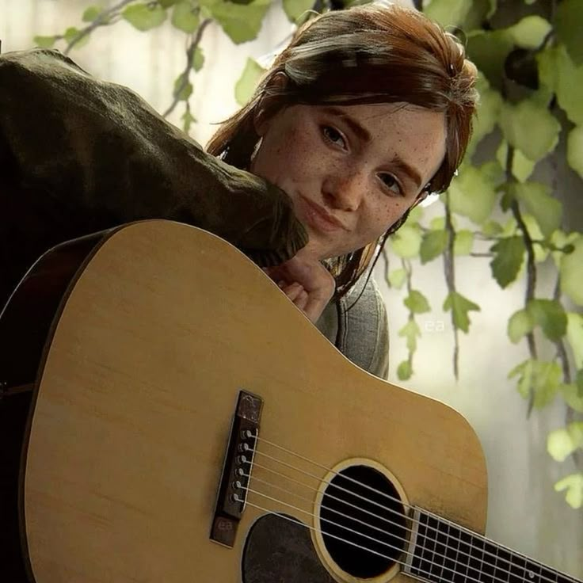
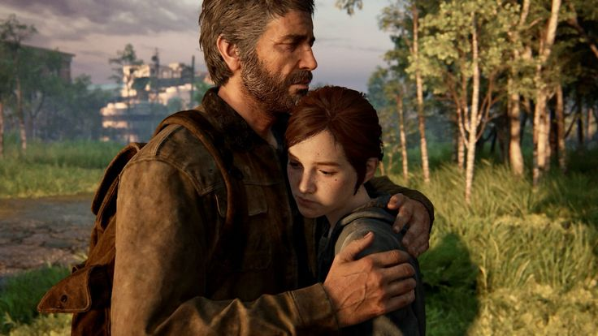
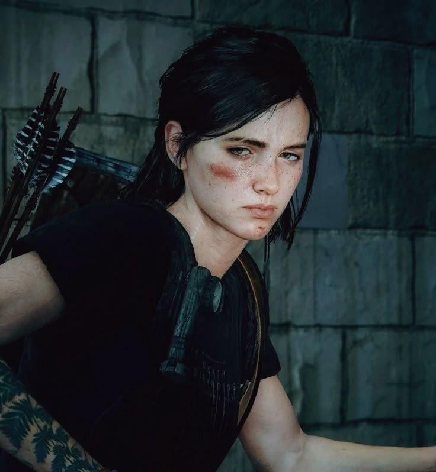
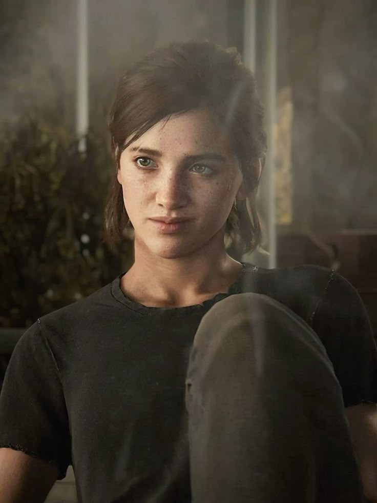

Ellie Williams
Bir salgının şekillendirdiği dünyada büyüyen Ellie, cesareti, kararlılığı ve sevdiklerini koruma isteğiyle öne çıkar.
Doğum: 2019
Durum: Hayatta
İlk oyun: The Last of Us
Bağışıklık: Cordyceps enfeksiyonuna karşı bağışık
Ellie'nin Dünyası




Ellie'nin Hikâyesi
Uyarı: Bu biyografi The Last of Us Part I, Left Behind ve Part II oyunlarının tamamı için spoiler içerir.
Çocukluğu ve bağışıklığı
Ellie Williams, Cordyceps salgınının dünyayı değiştirdiği bir dönemde, 2019 yılında doğmuştur. Boston'daki karantina bölgesinde büyümüş ve FEDRA'nın askerî hazırlık okuluna gitmiştir. Sert bir dünyada yetişmesine rağmen meraklı, alaycı, cesur ve mizah duygusunu koruyan bir karakterdir.
Hayatındaki en önemli kişilerden biri çocukluk arkadaşı Riley Abel'dır. Left Behind hikâyesinde Ellie ve Riley birlikte zaman geçirirken enfekte bir yaratığın saldırısına uğrar ve ikisi de ısırılır. Riley enfeksiyona yenik düşerken Ellie hastalanmaz. Ellie böylece Cordyceps'e karşı bağışıklığı olduğunu öğrenir. Riley'nin kaybı, Ellie'nin hayatındaki ilk büyük travmalardan biridir.
Joel ile yolculuğu
Ellie 14 yaşındayken Marlene tarafından Joel Miller ve Tess'e emanet edilir. İlk görev onu Boston karantina bölgesinden çıkarmaktır. Ancak Ellie'nin bağışıklığının tedavi geliştirilmesine yardımcı olabileceği düşünülünce yolculuk Amerika boyunca süren tehlikeli bir göreve dönüşür.
Yolculuk sırasında Joel ve Ellie enfekte yaratıklarla, tehlikeli insanlarla ve ağır kayıplarla karşılaşır. Başlangıçta birbirlerine güvenmeyen ikili, yaşadıkları olaylar sayesinde güçlü bir bağ kurar. Joel, kaybettiği kızı Sarah'ı hatırlatan Ellie'ye zamanla kendi kızı gibi bağlanır. Ellie de Joel'i ailesi olarak görmeye başlar.
Hastanedeki karar ve büyük yalan
Salt Lake City'deki Ateşböcekleri hastanesinde Ellie'nin bağışıklığının incelenmesi planlanır. Fakat ameliyatın Ellie'nin ölümüne yol açması beklenmektedir. Joel, Ellie'yi kaybetmeyi göze alamaz ve hastaneye saldırarak onu kurtarır. Ardından Ellie'ye tedavi geliştirme çalışmalarının başarısız olduğunu söyler.
Ellie bu açıklamadan şüphe duysa da Joel'in yemin etmesini ister. Joel gerçeği saklar. Bu olay, aralarındaki sevgiye rağmen ilişkilerinin ilerleyen yıllarda zarar görmesine neden olur. Ateşböceklerinin başarılı bir tedavi geliştirebileceği kesin olarak kanıtlanmamıştır.
Jackson'daki hayatı ve Joel'le yaşadığı kırgınlık
Ellie ve Joel, Wyoming'deki Jackson yerleşiminde daha güvenli bir hayat kurar. Ellie devriye görevlerine katılır ve Dina ile romantik bir ilişki geliştirir. Ancak Ellie, Joel'in hastanede yaşananlarla ilgili yalan söylediğini öğrenince ona olan güveni sarsılır. Aralarındaki bağ sürse de Ellie'nin içindeki kırgınlık tamamen ortadan kalkmaz.
Joel'in ölümü ve intikam yolculuğu
The Last of Us Part II'de Ellie 19 yaşındadır. Joel, Abby Anderson tarafından öldürülür. Abby'nin babası, ilk oyunun sonunda Joel'in öldürdüğü cerrahlardan biridir. Joel'in ölümü Ellie'yi derinden sarsar ve Ellie, Abby'yi bulup intikam almak için Seattle'a gider.
Seattle'da Ellie, Abby'nin çevresindeki insanlarla karşılaşır. İntikam arayışı sırasında Nora, Owen ve Mel gibi karakterlerin ölümüyle sonuçlanan olaylara karışır. Yaptıkları, Ellie'nin suçluluk duymasına ve intikam uğruna ne kadar ileri gittiğini sorgulamasına neden olur. Abby ile ilk yüzleşmesinde Ellie'nin hayatı bağışlanır.
Çiftlik evi ve Santa Barbara
Ellie, Dina ve JJ ile çiftlik evinde yaşamaya başlasa da Joel'in ölümüyle ilgili travmasını geride bırakamaz. Abby'nin Santa Barbara'da olduğunu öğrenince Dina'nın kalması yönündeki isteğine rağmen yeniden yola çıkar. Burada Abby ile son bir kez karşılaşır.
Dövüş sırasında Abby, Ellie'nin iki parmağını ısırarak koparır. Ellie, Abby'yi öldürmek üzereyken onu bırakır. Bu karar, Ellie'nin intikam döngüsünü sürdürmekten vazgeçtiği şeklinde yorumlanabilir. Ancak yaşadığı kayıplar geri alınamaz.
Sonu ve Joel'in hatırası
Ellie çiftlik evine döndüğünde Dina ve JJ'nin ayrıldığını görür. Joel'in kendisine öğrettiği gitarı çalmaya çalışır fakat kaybettiği parmakları nedeniyle bunu eskisi gibi yapamaz. Gitarı geride bırakıp evden ayrılır.
Oyunun finalinde Ellie'nin nereye gittiği açıklanmaz. Dina ile yeniden bir araya gelip gelmediği de kesin değildir. Ellie hayattadır, ancak intikam yolculuğu ona Joel'i, ilişkisini, parmaklarını ve eski hayatının bir bölümünü kaybettirmiştir. Joel'le yaptığı son konuşmayı hatırlaması, onun geçmişiyle farklı bir şekilde yüzleşmeye başlamış olabileceğini düşündürür.